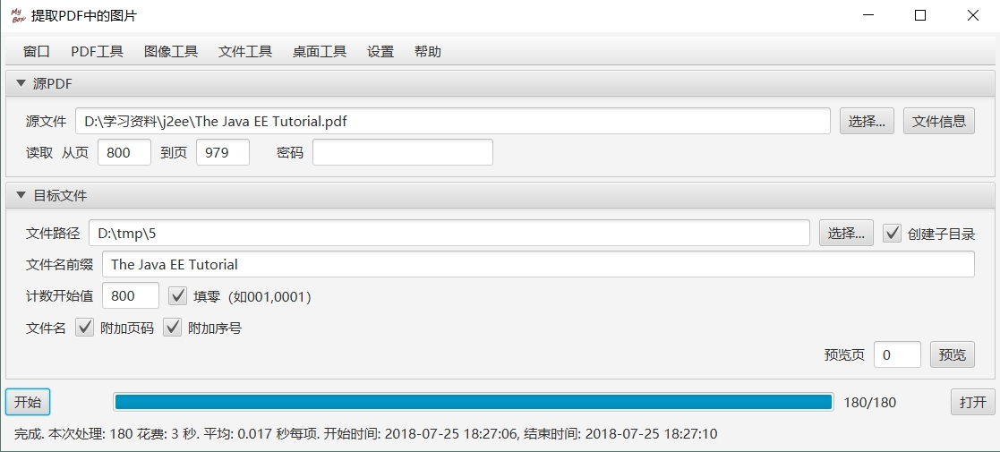
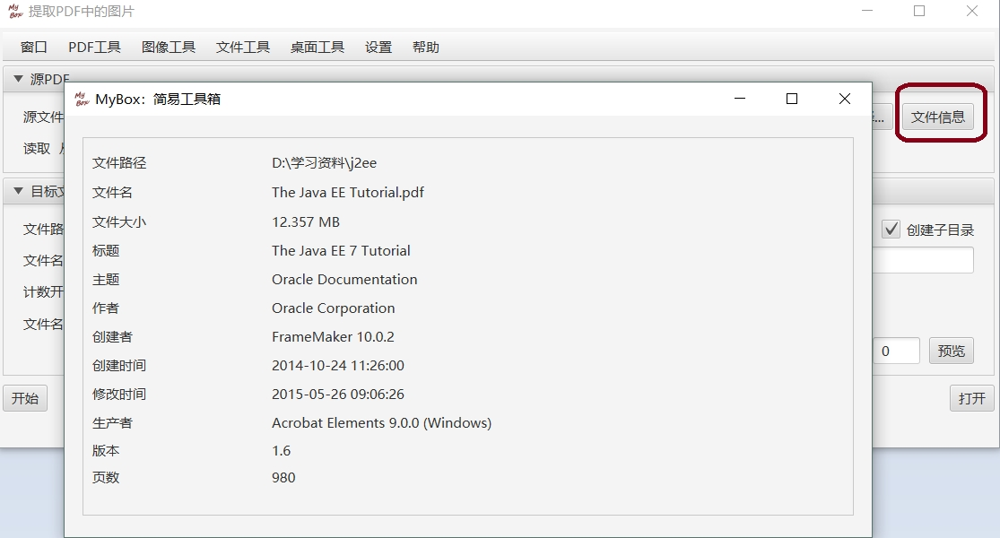
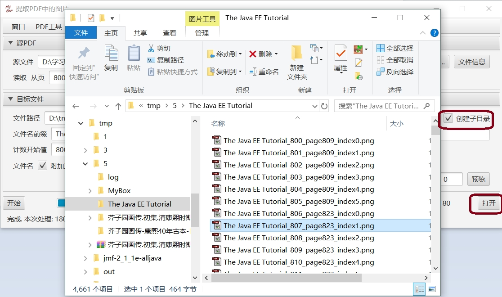
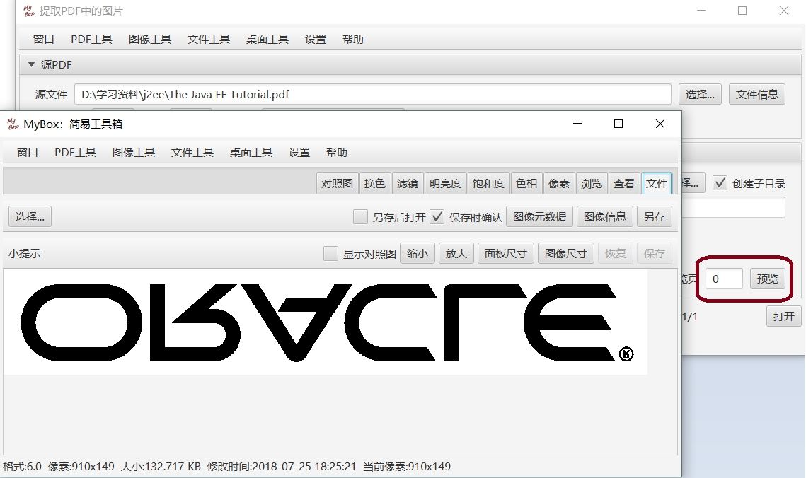
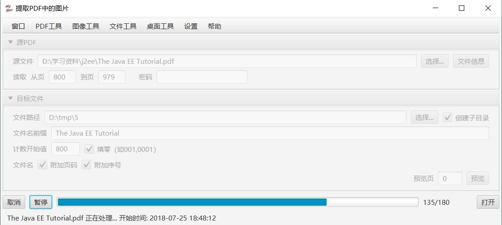
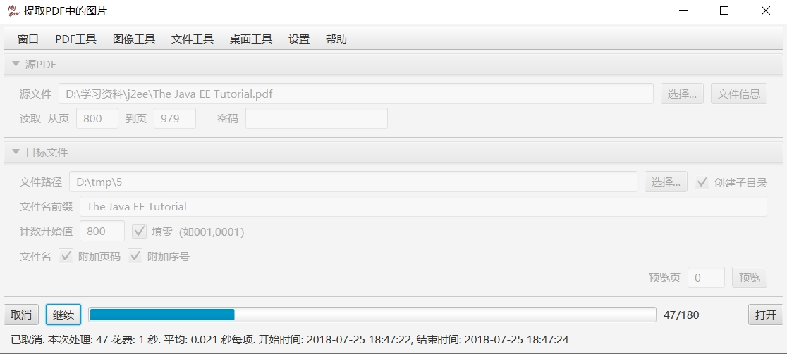
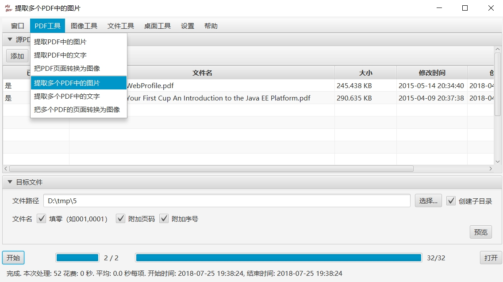

源PDF
可以填写要处理的页码范围，若打开PDF需要密码则应当填写密码。
点击“文件信息”按钮，可以查看PDF的信息：
目标文件
若选择“创建子目录”，则程序将在目标目录中以PDF文件名创建一个子目录，将提取出来的图片放入此子目录。若不选此项，则提取出的图片直接放在目标目录下。
提取的图片文件名是：用户填写的“文件名前缀”（被自动初始化为PDF文件名）+ 计数值 + 图片扩展名。用户可以设置计数开始值。注意：由于PDF页可能有多个图片，因此图片计数值不等于页码。
用户可以选择文件名是否附加页码或者页内图片序号
点击底部的“打开”按钮，可以查看图片在目录文件的生成情况：
预览
填写“预览页”、点击“预览”按钮，则程序提取预览页的第一图片后显示此图片。若填写的页码内没有图片，则会弹出“没有数据”的提示，用户可以另选预览页。
进程控制
点击底部“开始”按钮则开始提取进程，用户可以点击“暂停”/“继续”/“取消”来控制进程。
 提取多个PDF中的图片
可以对多个PDF文件执行批量提取图片：
